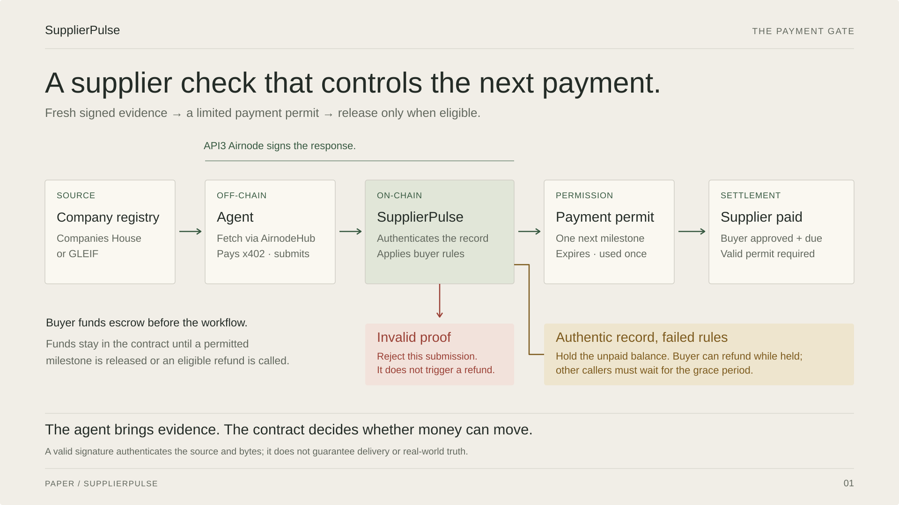
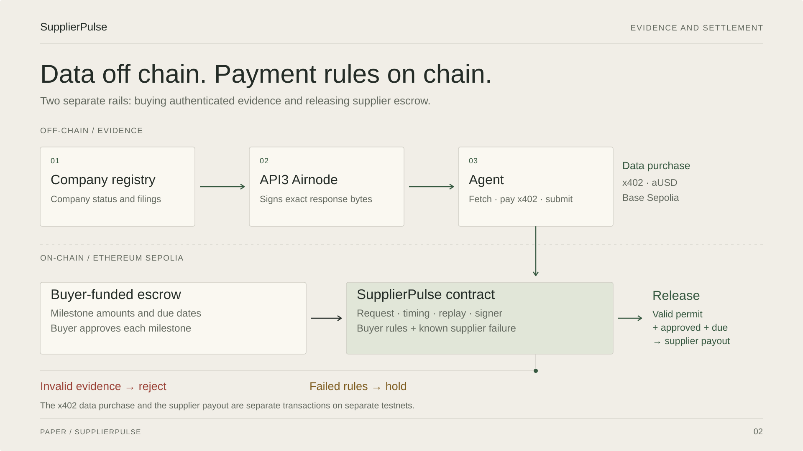
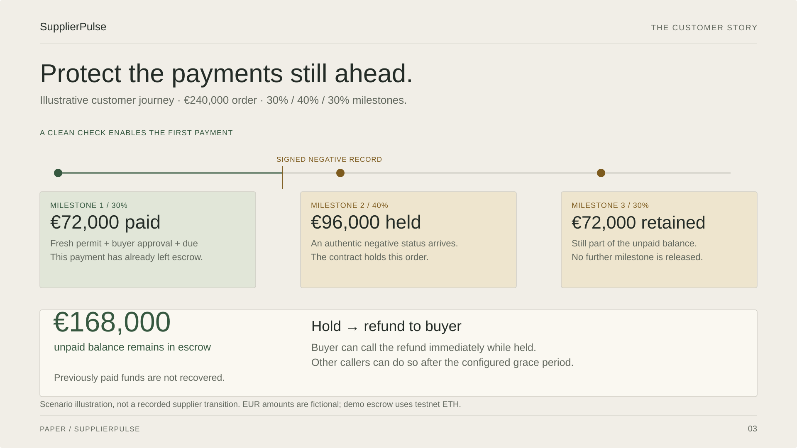

How should we explain the flow?
SupplierPulse · Paper visual language · 16:9 pitch diagrams

Recommended for the main pitch. Source → agent → contract → permit → payment. Shows who enforces the decision and when funds can move.


20-second speaker note
“The buyer funds escrow. Our agent obtains signed company-registry evidence through API3 AirnodeHub. The contract verifies the evidence and applies the buyer’s rules. A clean record creates a time-limited permit for only the next milestone. Payment also needs buyer approval and the due date. Forged evidence is rejected; authentic negative evidence holds the unpaid balance.”

For technical explanation and judge Q&A. Separates API3, the agent and the contract. Distinguishes the data purchase from the supplier payout across the two testnets.


25-second speaker note
“The upper rail is the evidence flow: the source registry, API3 Airnode and our agent. Signed data is purchased over x402 on Base Sepolia. The lower rail is the escrow contract on Ethereum Sepolia. The agent brings the evidence; the contract checks the request, timing, replay, signer and policy. Release also needs approval and the due date. These are two separate payments.”

For explaining customer value. Answers “which funds are protected?” The EUR 240,000 example is fictional; it does not claim recovery of amounts already paid.


20-second speaker note
“This fictional EUR 240,000 order has three milestones. The first EUR 72,000 has been paid. If the next check brings an authentically signed negative status, the remaining EUR 168,000 stays in escrow. The buyer can call a refund while held. Previously paid funds are not recovered. This is a scenario, not evidence of a supplier transition in the real demo order B.”